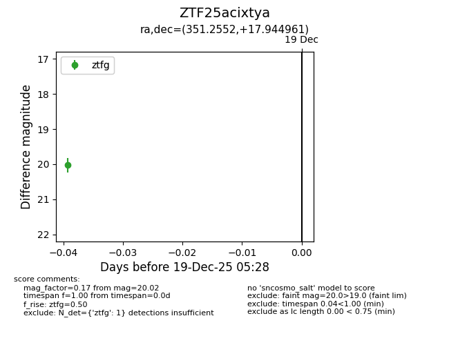
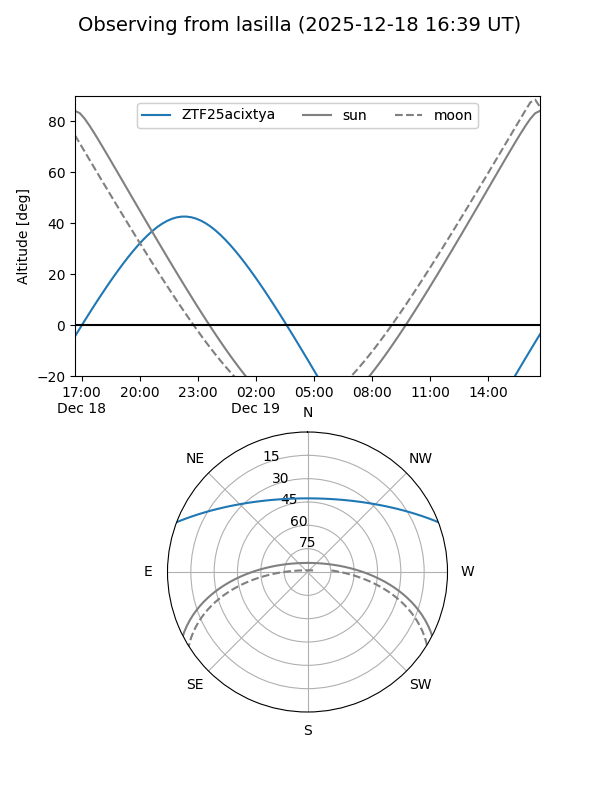
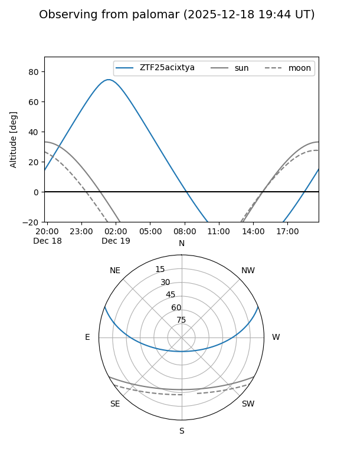

ZTF25acixtya
Target ZTF25acixtya at 2025-12-19 05:29
Aliases and brokers:
FINK: fink-portal.org/ZTF25acixtya
Lasair: lasair-ztf.lsst.ac.uk/objects/ZTF25acixtya
ALeRCE: alerce.online/object/ZTF25acixtya
alt names
ZTF25acixtya (ztf,fink_ztf)
Coordinates:
equatorial (ra, dec) = 351.2552,+17.94496
equatorial (HMS+DMS) = 23:25:01.26,+17:56:41.86
galactic (l, b) = (95.5932,-40.29490)
Flags:
Photometry:
last ztfg=20.02
1 ztfg detections
Lightcurve

Visibility


Additional plots